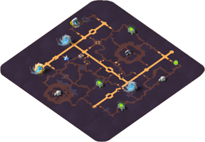
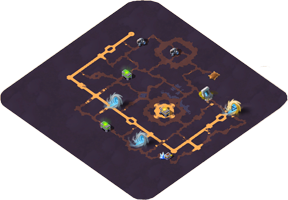
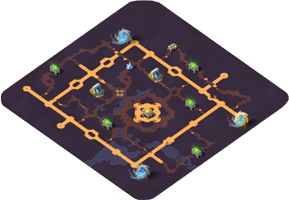
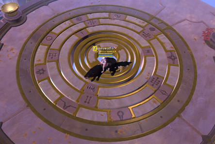

阿瓦隆之路
本頁目前只有部分內容，未來會再補充。
地圖名
阿瓦隆地圖名稱必定為：以"-"連接的兩個單字或三個單字。大部分的地圖都是兩個單字，例：Ferites-Ohohtum。
三個單字的必為地堡圖，例：Quaent-Al-Vynsum，但地堡圖也有可能是兩字的。
地圖名稱第一個單字的首字母，代表該地圖的黃色道路的形狀。(地堡圖除外)
例：
| Huyitos-Ohenlum |
|  |
| Cynitos-Atatlum |
|  |
| Oouitos-Alaiam |
|  |
有C、F、H、O、P、S、T、X八種。
金屬環符號
阿瓦隆之路中，通往其他地圖的傳送門的地板會有像這樣的金屬環：
金屬環上的符號提供了門後面那張地圖的資訊。
最裡面那圈：
| 阿瓦隆綠色傳送門，門票數為2人。(已移除) | |
| 阿瓦隆藍色傳送門，門票數為7人。 | |
| 阿瓦隆金色傳送門，門票數為20人。 |
中間那圈：
| 門後面那張地圖的階級為T4。 | |
| 門後面那張地圖的階級為T5。 | |
| 門後面那張地圖的階級為T6。 | |
| 門後面那張地圖的階級為T7。 | |
| 門後面那張地圖的階級為T8。 |
最外面那圈：
| 通往皇家大陸的藍區。 | |
| 通往皇家大陸的黃區。 | |
| 通往皇家大陸的紅區。 | |
| 通往異域(黑區)。 | |
|
通往另一個淺層阿瓦隆(推測)。 當中的阿瓦隆傳送門有些連結開放世界(皇家大陸、異域)，有些則連結其他阿瓦隆。 |
|
|
通往另一個中層阿瓦隆(推測)。 當中的阿瓦隆傳送門只會連結其他阿瓦隆。 |
|
|
通往另一個深層阿瓦隆(推測)。 當中的阿瓦隆傳送門只會連結其他阿瓦隆。 首次進入會獲得"深陷兔子洞"的成就。 |
|
|
通往另一個阿瓦隆(地堡圖)。 當中的阿瓦隆傳送門只會連結其他阿瓦隆，僅會生成1~3個傳送門。 |
|
|
目前不確定，沒有遇過。 |
編輯紀錄
作者: runnywolf
最後編輯日期: 2023/3/12